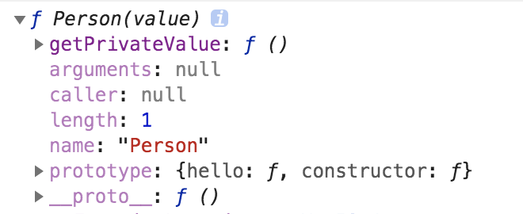
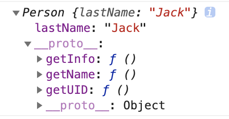
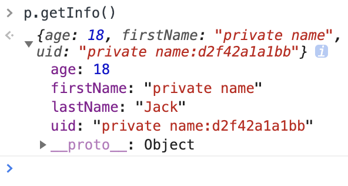
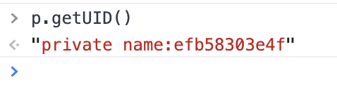
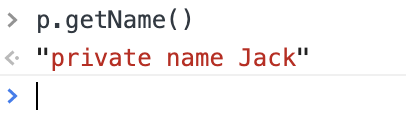

JavaScript中还没有私有变量标准，先来了解下私有变量是什么，以及都有哪些类型。
1. 私有变量的用途
在编程中，私有变量通常作为类或者函数的内部变量，只有特定访问权限的方法才能够获得访问权，一个私有变量不管是类或者实例都无法从外部直接获取、修改，从而实现该变量私有化，保护变量的作用。
2. 私有变量的类别
- 实例私有变量
- 静态私有变量
3. 静态私有变量
静态私有变量为类定义所具有的属性，所有该类的方法都具有访问权并且变量是共享一份，在此可以借助闭来进行实现：
1
2
3
4
5
6
7
8
9
10
11
12
13
14
15
16
17
18
19
| var Person = (function () {
var privateStaticVar = 'Some private static value'
function Person (value) {
value !== undefined && (privateStaticVar = value)
}
Person.prototype.hello = function () {
return 'Hello, this is ' + privateStaticVar
}
Person.getPrivateValue = function () {
return privateStaticVar
}
return Person
})()
|
我们实现了该变量的静态化以及私有化，静态化则是多个实例共享一份，私有化则无法在实例或者类上直接以属性方式获得访问，现在用代码验证下:

1
2
3
4
5
6
7
8
9
10
11
12
| Person.getPrivateValue()
Person.privateStaticVar
const p1 = new Person()
p1.hello()
p1.privateStaticVar
const p2 = new Person('Person 2')
p2.privateStaticVar
p2.hello()
p1.hello()
|
4. 实例私有变量
与私有静态变量意义，这里使用闭包形式来实现私有变量，由于实例的私有变量是各自独立一份不共享，所以这里定义了一个对象作为存储每一份独立的私有变量信息，而我们为每一个实例定义一个_vId属性做为key来进行私有变量仓库的关联:
1
2
3
4
5
6
7
8
9
10
11
12
13
14
15
16
17
18
19
20
21
22
23
24
25
26
27
28
29
30
31
32
33
34
35
36
37
38
39
40
41
42
43
44
45
46
47
48
49
50
51
52
53
54
55
56
57
58
59
60
61
| var Person = (function () {
var valueKey = '_vId'
var privateVars = Object.create(null)
var getRandHex = function () {
return Math.random().toString(16).slice(3, -1)
}
function Person (lastName) {
Object.defineProperty(this, valueKey, { value: getRandHex() })
privateVars[this[valueKey]] = Object.create({
firstName: 'private name',
age: 18,
getRandHex: getRandHex.bind(this)
})
this.lastName = lastName
}
Person.prototype = {
getName: function () {
var firstName = privateVars[this[valueKey]].firstName
var lastName = this.lastName
return firstName + ' ' + lastName
},
getUID: function () {
var getRandHex = privateVars[this[valueKey]].getRandHex
var firstName = privateVars[this[valueKey]].firstName
return firstName + ':' + getRandHex()
},
getInfo: function () {
return {
age: privateVars[this[valueKey]].age,
firstName: privateVars[this[valueKey]].firstName,
lastName: this.lastName,
uid: this.getUID()
}
}
}
return Person
})()
var p = new Person('Jack')
console.log(p)
|
从上面代码可以看出，我们定义了两个私有变量一个实例变量，三个公有方法，和一个私有方法，我们来测试下代码，看看能否按照我们的意愿执行：
1
2
| var p = new Person('Jack')
console.log(p)
|

可以发现，符合预期，然后我们来继续测试下其他的私有变量和私有方法：



可以看出变量与方法私有化使得使用更加安全，避免了外部的访问而导致的修改。